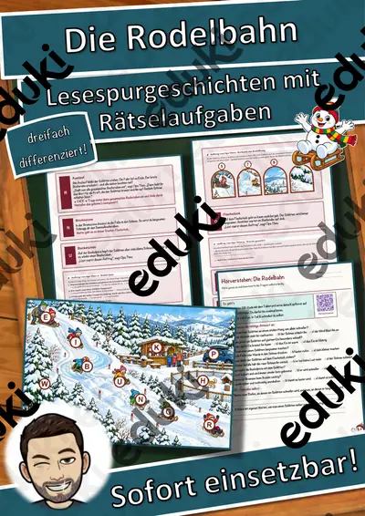
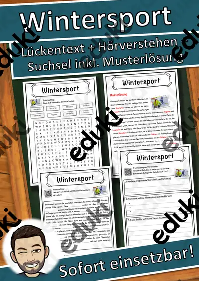

Materialpaket Schnee, Eis und Wintersport für die 3. Klasse: 10 Lesespurgeschichten mit Rätselaufgaben (Rodelbahn, Eisstock, Schneelabor & mehr)
10 Lesespuren für die 3. Klasse – im Paket günstiger als einzeln
Mit diesem Materialpaket bekommst du 10 meiner Lesespurgeschichten für die 3. Klasse rund um Schnee, Eis und Bewegung im Winter – Rodelbahn, Eisstock, Schneeschuhe, Winterdienst, Eisbrecher und Schnee-Experimente in einem Download. Alle Lesespuren sind sofort einsetzbar, dreifach differenziert (leicht ★ / mittel ★★ / schwer ★★★) und jeweils in Farbe und Schwarz-Weiß enthalten. So arbeitet deine ganze Klasse am selben Thema, und jedes Kind liest auf seinem Niveau.
Preisvorteil: Einzeln gekauft kosten die 10 Materialien regulär zusammen 39,90 €. Im Paket zahlst du nur 26,49 € und sparst damit rund 34 %.Die 10 Materialien im Paket
Der Eisstock (Klasse 3): Ganz nebenbei entdecken die Kinder, wie dieses alte Winterspiel geht und warum ein schwerer Stock auf glattem Eis so weit gleitet.
Das Winter-Zielwerfen (Klasse 3): Ganz nebenbei entdecken die Kinder, warum ein geworfener Ball nie geradeaus fliegt, sondern immer einen Bogen macht, wie die Schwerkraft ihn nach unten zieht und wie man werfen muss, um nahe und weit entfernte Ziele zu treffen.
Die Schneeschuhwanderung (Klasse 3): Ganz nebenbei lernen die Kinder, mit welchen Tricks Reh, Hase, Fuchs und Vogel den kalten Winter überstehen.
Die Rodelbahn (Klasse 3): Ganz nebenbei entdecken die Kinder, warum ein Schlitten mal blitzschnell wird und an anderer Stelle einfach ausrollt und stehen bleibt.
Fit durch den Winter (Klasse 3): Mama Nadja und ihr Sohn Elias gehen an einem kalten Tag durch das Haus und entdecken, wie man in der kalten Jahreszeit gesund und stark bleibt – von der Garderobe über das Waschbecken, den Obstteller, das Lüftungsfenster und die Gartentür bis zum Bett.
Die Schneekanone (Klasse 3): Ganz nebenbei entdecken die Kinder, wie aus Wasser künstlicher Schnee entsteht und warum das nur bei Kälte funktioniert.
Der Eisbrecher (Klasse 3): Ganz nebenbei lernen die Kinder, wie ein Eisbrecher im Winter das zugefrorene Meer wieder öffnet, damit andere Schiffe fahren können.
Der Winterdienst (Klasse 3): Ganz nebenbei entdecken die Kinder, wie Straßen und Wege im Winter sicher gehalten werden und warum manche Stellen besonders schnell vereisen.
Das Schneelabor (Klasse 3): Ganz nebenbei entdecken die Kinder, woraus Schnee besteht, warum er weiß ist und warum eine Schneedecke wärmt.
Das Eis am Dach (Klasse 3): Ganz nebenbei entdecken die Kinder, wie so ein Eisgebilde an einem sonnigen Wintertag überhaupt entsteht.
Lehrplanbezug (LehrplanPLUS Bayern, Grundschule, Jahrgangsstufe 3)Deutsch – Lesen, mit Texten und weiteren Medien umgehen: Die Kinder lesen sinnentnehmend, wenden Lesestrategien an und entnehmen gezielt Informationen, denn nur wer genau liest, findet die nächste Station.
Deutsch – Sprechen und Zuhören: Das Hörverstehen per QR-Code schult konzentriertes Zuhören; Gespräche über Bräuche und Sachthemen fördern das Erzählen und Begründen.
Deutsch – Schreiben: Die Kinder beantworten Fragen schriftlich, füllen Steckbriefe aus und notieren Lösungen.
Heimat- und Sachunterricht: Der Eisstock, Das Winter-Zielwerfen, Die Schneeschuhwanderung, Die Rodelbahn, Fit durch den Winter, Die Schneekanone, Der Eisbrecher, Der Winterdienst, Das Schneelabor, Das Eis am DachSo funktioniert eine Lesespur
Die Kinder lesen ab START einen kurzen Abschnitt. Am Ende verrät ein Hinweis den nächsten Ort, den sie auf dem farbigen Plan suchen. Dort lesen sie weiter. An jeder richtigen Station sammeln sie einen Buchstaben, und eingeplante Sackgassen dienen der Selbstkontrolle. Am Ende ergeben die umgestellten Buchstaben ein geheimes Lösungswort.
Das ist in jeder Lesespur enthalten
Lesespurgeschichte in 3 Niveaus (leicht ★, mittel ★★, schwer ★★★)farbiger Plan als Suchkarte
Rätselaufgaben auf dem Weg, z. B. Zuordnen, Quiz, Rechenaufgabe und Steckbrief
Hörverstehen mit QR-Code zum Hörtext
Rätselseite mit Wörter-Suchsel und Wissensfragen
Ausmalbild zum Themaausführliches Lösungsblatt für die Lehrkraftalles zusätzlich als drucksparende Schwarz-Weiß-Variante
Insgesamt umfasst das Paket 470 Seiten.
Einsatzmöglichkeiten
Alle Materialien passen von Dezember bis Februar, auch als Thema der Woche, Werkstatt oder für die Adventszeit. Du kannst sie im Stationenlernen, in Freiarbeit und Wochenplan, in der Leseförderung und in Förderstunden einsetzen. In Vertretungsstunden funktionieren sie ohne Vorbereitung. Sie eignen sich für alle Schulen in allen Bundesländern.
Viel Freude mit deiner Klasse wünscht dir Snice!
Ähnliche Materialien

Lesespur: Das Schneelabor – Lesespurgeschichte mit Rätseln (Klasse 3)

Lesespur: Der Eisstock – Lesespurgeschichte mit Rätseln (Klasse 3)

Lesespur: Die Rodelbahn – Lesespurgeschichte mit Rätseln (Klasse 3)

Lesespur: Weiß wie der Schnee – Lesespurgeschichte mit Rätseln (Klasse 3)

Materialpaket Natur im Winter für die 3. Klasse: 10 Lesespurgeschichten mit Rätselaufgaben (Wintertiere, Winterwald, Schneespuren & mehr)

Wintersport – Hörverstehen mit Lückentext (interaktiv)

Wintersport Lückentext mit Wortspeicher Hörverstehen und Suchsel